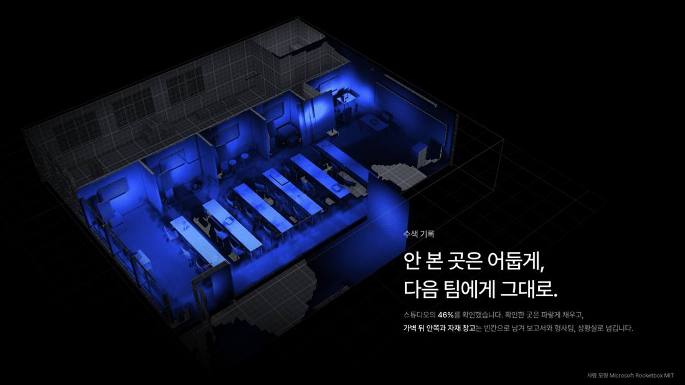
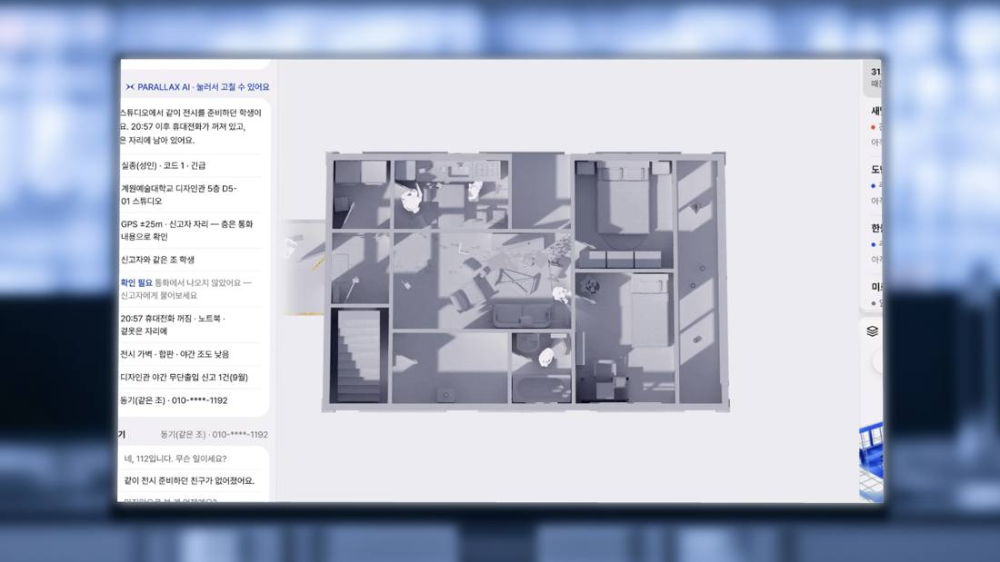
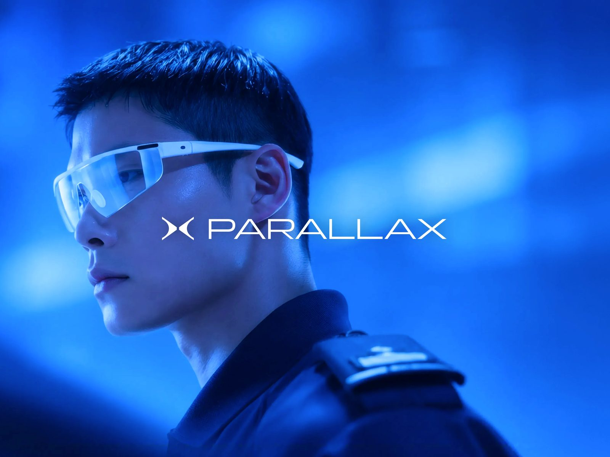

프로젝트
소개
증명사진 3:4
한정민
[더미] 자기소개가 들어갈 자리예요. 어떤 문제를 좋아하고, 어떻게 일하는 기획자인지 세 문장 안팎으로 적어요.
한정민
[더미] 자기소개가 들어갈 자리예요. 어떤 문제를 좋아하고, 어떻게 일하는 기획자인지 세 문장 안팎으로 적어요.






협업 · 서비스 기획
사건현장에서 본 것이 다음 사람에게 빠지지 않고 넘어가도록 만든 경찰 작전 지원 서비스입니다

01
무엇을 만들었고, 나는 무엇을 했는가
현장에 있던 경찰과 없던 경찰이 같은 정보를 보고, 교대나 증원이 와도 하던 일을 이어받게 만들었습니다.
누르면 그 기기의 화면과 설계 내용이 나옵니다.
본 것을 그 자리에서 바로 남깁니다
현장 기록필요한 기록을 어디서든 꺼내 봅니다
사건 기록 조회담당이 바뀌어도 사건을 이어받습니다
이동 중 인계 브리핑누가 무엇을 하는지 바로 봅니다
인력별 대응 현황02
어떤 근거로 이 문제에 주목했는가
자료에서 찾은 어려움을 현장 경찰관도 똑같이 겪고 있었습니다.
사건 4건 중 1건에서 인계가 생깁니다
치안정책연구소 2015·2020
근무 중에 서류를 끝낼 시간이 없다고 답했습니다
영국 경찰관 35,092명 · 2024
보고서 때문에 주 1회 이상 퇴근이 늦어집니다
미국 경찰관 1,777명 · 2026
기록이 늦어질수록 기억이 흐려집니다. 점을 눌러 보세요.
9월에 지구대와 파출소에서 현직 경찰관을 만나 물었습니다.
장비와 화면을 오가며 확인합니다
현장에서는 수첩에 적고, 돌아와서 다시 입력합니다
11명 중 8명인계한 뒤에 다시 물어오는 일이 있습니다
11명 중 8명법률이나 낯선 상황은 메모나 AI로 채웁니다
경찰백서와 과학치안진흥센터 로드맵입니다. 연도를 눌러 보세요.
03
누구의 어떤 순간을 바꾸려는가
기존 서비스는 상황을 보여 주는 데서 끝나지만, PARALLAX는 기록과 인계까지 이어 줍니다.
상황을 확인하고 다음 사람에게 넘기는 경찰관입니다
상황 파악은 돕지만, 앞선 조치를 후속 인력에게 넘기는 기능은 약합니다
기록을 모으고, 다음 사람에게 넘기는 데까지 만들었습니다
열 제목을 누르면 그 기준만 진하게 보입니다. ○ 지원, △ 일부, × 없음
이름과 단계를 눌러 보세요
04
왜 이런 구조와 사용 방식을 선택했는가
기기가 바뀌어도 사건 정보는 하나로 이어지도록, 역할에 필요한 기기만 썼습니다.
가로는 사건이 진행되는 순서, 세로는 쓰는 기기입니다. 기기를 고르면 그 기기의 칸만 남습니다.
MVP 표시는 먼저 만든 기능입니다.
파랑 한 가지를 11단계로 나눴습니다. 칸을 누르면 색 값이 복사됩니다.
국문 · Pretendard
현장의 기록을
다음 대응으로
영문 · Panchang
Field records.
Connected response.
PARALLAX = 경찰(P) + AR 글래스(AR) + 모든 단계(ALL) + AI(AX)
05
설계 의도를 실제 화면에서 어떻게 구현했는가
기기마다 화면과 조작이 달라서 UX를 따로 설계하고, 모두 같은 사건 기록을 쓰게 했습니다.
기기를 고르면 실제 화면과 설계 내용이 나옵니다.
06
무엇이 부족했고, 어떻게 개선했는가
현직 경찰관에게 완성한 화면을 보여 주고 물었더니, 네 기기 모두 도움이 된다고 답했습니다.
1차와 다른 현직 경찰관들입니다. 개인 의견이며 경찰의 공식 입장은 아닙니다. 인원: [입력] 0명
직접 부딪힌 어려움과 실패
관객이 상황실 요원으로 사건을 넘긴 뒤, 후속 투입 경찰관이 되어 그 사건을 이어받습니다.
기기별 프로토타입
AR 글래스 · 폴더블 · 차량 · 상황실
아이콘
디자인 시스템
시나리오 영상
한 사건이 네 기기를 지나갑니다
웹 쇼잉, 전시 팜플렛(도장 찍기 체험), 시리즈 포스터(A1 2장, A2 2장)도 만들었습니다.